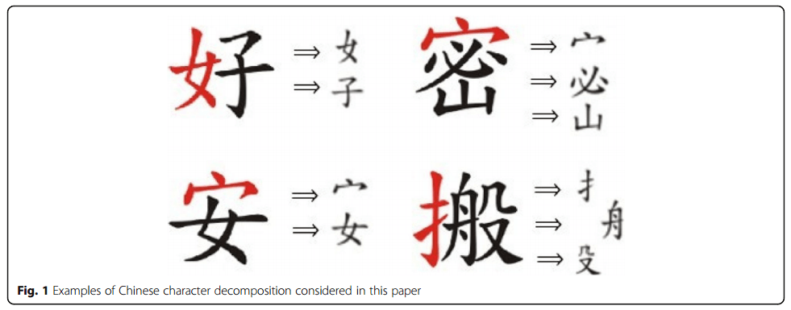
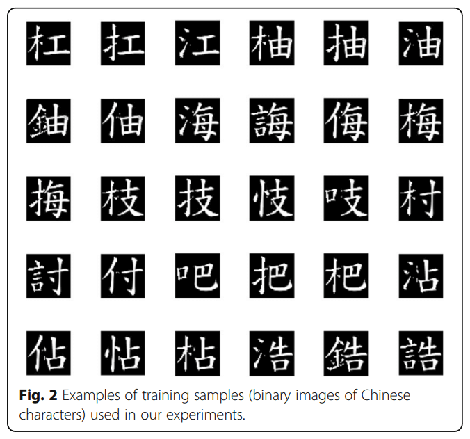
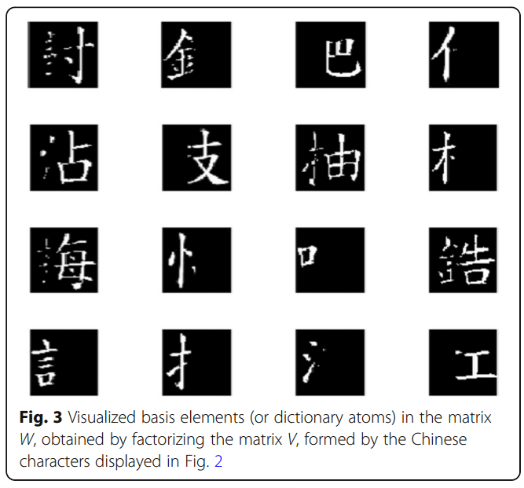
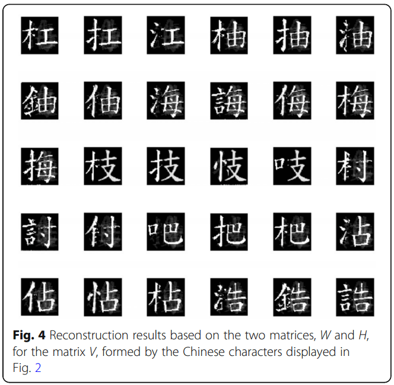
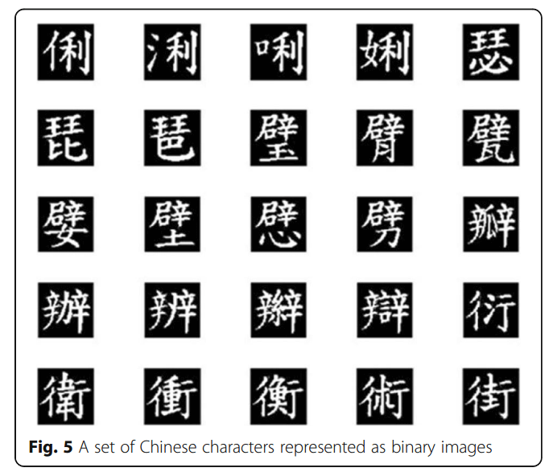
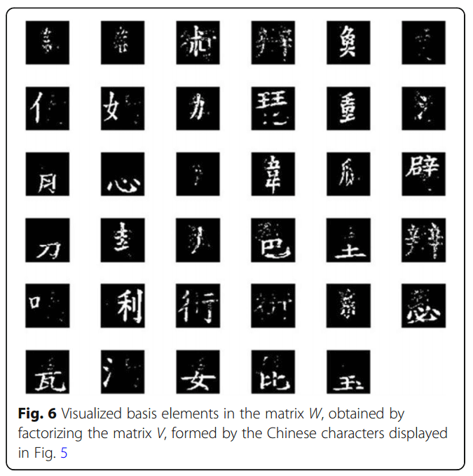

资源
全文
Abstract
汉字的分解很困难，文献中很少对其进行研究。在本文中，我们提出了一种新的非负矩阵分解（NMF）技术，将一个汉字分解为几个图形组件，而不考虑字符的笔划或组件的任何语义或语音特性。汉字通常可以表示为二进制图像。然而，传统的 NMF 仅适用于表示一般灰度级或彩色图像。为了使用 NMF 分解二进制图像，我们强制两个矩阵（通过对要分解的二进制图像/矩阵进行因子分解而获得）的所有元素尽可能接近 0 或 1。结果，一个汉字可以被有效地分解为几个分量，其中每个分量在语义上是不可读的。此外，我们基于 NMF 的汉字分解方法适用于视觉秘密共享，通过在多方之间分配共享（不同的字符成分），因此只有当各方与各自的共享放在一起时，才能重建秘密（原始汉字）。实验结果验证了该方法的分解性能和可行性。
1 Introduction
一个汉字通常由几个图形组成，包括部首和其他几个不同的部分。部首是字典中用来索引汉字的图形组件。
具有相同成分的字符可能具有相似的语义或语音特性。汉字的分析和处理有着悠久的历史，最近随着人工智能技术的发展，如机器学习和深度学习，以及一些相关应用（如汉字识别和中文文档的自然语言理解），汉字分析和处理受到了极大的关注。
1.1 Chinese character decomposition
为了在线处理以二进制图像形式存储的中文文档，如果能够提前对汉字进行有效的自动分解，将是非常有帮助的。然而，将一个汉字（以二进制图像表示）自动分解为不同的成分是困难的，并且在文献中很少进行研究。
基于我们对汉字相关作品的探索，大多数先前的研究都旨在通过自动字符分解来提取汉字笔画。笔画是汉字的基本组成部分，也是书写楷书所必需的。
为了将汉字分解为一组笔画，相关工作：
- 一种基于数学形态学的方法。
- 一种汉字笔画提取模型来提取主笔画。
- 基于连接将汉字分解为孤立的笔画结构。然后，提取笔划结构的形状上下文，并通过形状匹配在标准数据库中找到匹配的对应对象。
- 建立一个字体骨架流形，以便通过遍历为汉字笔划提取应用而学习的流形中的位置，始终可以找到最相似的字符作为模板。
- 从自动将汉字图像分解为笔画开始，然后在结构信息的指导下分别调整笔画的大小，以实现汉字的结构感知图像大小调整。
这些将汉字分解为笔画的工作主要用于字符识别、书写风格分析和新字体合成。这种方法通常依赖于由标准汉字模板或标准笔画组成的标准数据库，用于形状/模板匹配。
另一方面，为了更好地捕捉自然语言单词的语义，最近引入了低维分布式单词表示，也称为单词嵌入。相关工作：
- 提出了一种称为 cw2vec 的方法，用于学习具有笔划 n-gram 信息的中文单词嵌入。
更具体地说，我们设计了一种极简主义的方法来利用笔划 n-gram，它可以捕捉中文单词的语义和形态层面的信息。
此外，为了改进单词嵌入：
- 一种混合学习方法，该方法集成了单词嵌入的组成和预测模型。
一般来说，单词嵌入技术已被证明适用于单词相似性、单词类比、文本分类和命名实体识别等任务。然而，单词嵌入的主要目标通常是更好地捕捉自然语言单词的语义，这与下一小节中描述的方法有本质上的不同。
1.2 Main objective of this paper
与上述工作的目标和方法形成鲜明对比的是，本文的目标是开发一个自动汉字分解框架，将一个汉字分解为几个图形组件，而不考虑字符的笔划或组件的任何语义或语音特性。

例如，汉字“好’ 将自动分解为组件女’ 和’子’ 而不考虑这两个组成部分中的任何一个的语义或语音特性。也就是说，我们打算自动实现以二进制图像表示的汉字的图形分解，而不需要任何关于汉字成分或笔画的语义和语音特性的先验知识。
为了实现我们的目标，我们提出了应用**非负矩阵分解（NMF）**技术将汉字分解为不同的分量。通常，NMF（或非负矩阵近似）打算将一个矩阵分解为两个矩阵，其中所有三个矩阵都没有负元素。非负性的性质使得所得矩阵更容易检查；因此，NMF 已成功应用于数字音频信号、数字视觉信号和文档聚类中的几种源分解应用。
然而，从使用 NMF 的图像信号分解的角度来看，标准 NMF 技术仅适用于处理一般数字灰度或彩色图像，而不适用于二进制图像。
一般来说，汉字通常以黑白二元音呈现。因此，本文提出了一种新的 NMF 框架来分解以二进制图像（或矩阵）表示的汉字。
此外，我们通过将所提出的 NMF 技术应用于视觉秘密共享（信息安全中的一种视觉密码技术）来评估其性能，该技术安全地共享编码为部分汉字二进制图像的秘密消息。
1.3 Main contributions of this paper
本文的主要创新和贡献有三个方面：
-（a）据我们所知，我们是第一个提出自动汉字分解框架的人，该框架将字符分解为图形组件，而不需要事先了解汉字组件或笔画的语义或语音特性；
-（b）为了实现这一目标，我们提出了一种新的 NMF 框架，将二进制图像分解为两个矩阵，同时迫使两个矩阵的所有元素尽可能接近 0 或 1；
-（c）我们成功地将基于 NMF 的汉字分解技术应用于视觉秘密共享，以安全地传输由汉字的二进制图像编码的秘密消息。
2 Standard non-negative matrix factorization algorithm
**非负矩阵分解（NMF）**技术已被证明对多元数据的分解是有用的，其中“非负性”是矩阵分解能够学习数据的基于部分的表示的有用约束。学习的非负基向量用于分布式或稀疏组合，以在数据重建中产生表现力。NMF 的基本问题可以形式化描述如下。
给定大小为 的非负矩阵 ，目标是找到两个非负矩阵因子，大小为 的 和大小为 的 ，使得
其中 可以被视为由来自数据集的 个数据向量（每个数据向量的维度为 ）组成的矩阵。项 通常被选择为小于 或 ，使得 和 这两个矩阵小于原始矩阵 。基于等式：
的每个数据向量（列） 由 的列的线性组合近似，该线性组合由 的相应列 的分量加权。也就是说， 可以被视为包含针对 中的数据的线性近似而优化的基。
下式定义的函数仅在 或仅在 中是凸的，因此，它在两个变量中都不是凸的。然而，已经发现，下面表达的“乘法更新规则”在解决问题的收敛速度和易实现性之间实现了良好的折衷。
For
其中 表示迭代次数， 表示矩阵索引。非负性的约束允许对图像形式中的基本元素进行解释。
3 Proposed novel non-negative matrix factorization algorithm
为了扩展标准 NMF 以处理二进制图像（存储为二进制矩阵），我们建议强制两个因子分解矩阵（例如， 和 ）的所有元素尽可能接近 0 或 1。类似于等式中定义的基本 NMF 问题。1，给定大小为 的非负矩阵 ，我们的目标是找到两个非负矩阵因子，大小为 的 和大小为 的 ，使得 ，并且 和 中的所有元素都约为 0 或 1。我们首先将目标函数定义为：
为了实现所提出的想法，我们引入了两个惩罚项（具有两个参数， 和 ），以将每个 或 之间的接近度增加到 0 或 1，如
应该注意的是，所提出的 NMF 算法的主要新颖性是强制矩阵中的所有元素 和 近似为 0 或 1，以实现二进制矩阵的分解。
这个想法在我们的方法中通过将其公式化为等式来实现。
4 Proposed NMF algorithm for binary image factorization
-
将 和 中的所有元素随机初始化为 0 或 1，并初始化要执行的算法的预定义次数 的迭代。
-
更新上式中定义的 和 。基于稍后描述的最速下降方法。
-
如果 \operatorname*{If}\left(H_{\boldsymbol{b}\boldsymbol{j}}^2-H_{\boldsymbol{b}\boldsymbol{j}}\right)^2+\left(W_{\boldsymbol{i}\boldsymbol{a}}^2-W_{\boldsymbol{i}\boldsymbol{a}}\right)^2<\boldsymbol{\varepsilon}，或者达到目标迭代次数（ ），则停止算法，其中 是预定义的阈值。
否则，请转至步骤 2。
在我们的 NMF 算法的步骤 2 中，我们应用最速下降方法迭代更新 和 ，推导如下。我们首先取 的导数：
通过使步长（由 表示）为：
的更新规则可以定义为：
其中上标 表示迭代次数。
以同样的方式， 可以通过
\begin{aligned}W_{ib}^{k+1}&=W_{ib}^k–a_{ib}^k\times\frac\partial{\partial W_{ib}^k}\mathcal{L}(W,H)^k\\&=W_{ib}^k\\&\times\left[\frac{(VH^{\mathrm{T}})_{ib}^k+6\lambda_2\left(W_{bj}^k\right)^2}{\left[(WH)H^{\mathrm{T}}\right]_{ib}^k+4\lambda_2\left(W_{ib}^k\right)^3+2\lambda_2W_{ib}^k}\right],\end{aligned}5 Proposed visual secret sharing method for Chinese characters via non-negative matrix factorization with experimental results
我们将所提出的用于二进制图像分解的 NMF 算法应用于汉字的视觉秘密共享，并给出实验结果来证明我们的新 NMF 算法的性能。
5.1 Visual secret sharing
视觉密码学是一种加密技术，允许对视觉信息（如图像、文本）进行加密，使其成为某人的工作，通过视觉阅读解密密文，而无需复杂的解密计算。视觉秘密共享是一种视觉加密技术，其中要进行视觉加密的图像可以分解为 个共享，因此只有拥有全部 个共享的人才能解密图像，而拥有 n−1 个共享的任何人都无法解密原始图像。基于这一思想，还对基本框架进行了一些推广，包括 中的 （或 (，)- 阈值）视觉密码学。
也就是说，任何 个共享都可以解密秘密，但 t−1 或更少的组都不能解密，其中 。
5.2 Visual secret sharing for Chinese characters via proposed NMF algorithm
据我们所知，关于汉字视觉秘密共享的研究在文献中并不常见。在本文中，我们研究了所提出的 NMF 算法在汉字视觉秘密共享中的适用性。需要注意的是，(, )-阈值的问题，以及秘密共享的安全性和稳健性，都超出了本文的范围。
本文中考虑的目标应用程序的需求描述如下:
- 首先，本文中要共享的秘密消息应该是包含一组汉字的二进制图像。
- 其次，为了重构秘密消息，需要所有的共享。
在我们方法的训练阶段，我们的 NMF 模型有必要学习汉字分解的基础（或字典）。因此，我们首先随机选择了 30 个汉字，用它们对应的 30 个二进制图像表示：

汉字的每个二进制图像都用一个 的矩阵表示。为了建立要因子分解的矩阵（），将字符的每个 矩阵转换为大小为 的列。结果，矩阵（）由 列组成，每列大小为 ，其中每列表示汉字的训练样本，用 表示，n＝10000，m＝30。通过应用所提出的 NMF 算法将 分解为大小为 的 和大小为 的 两个矩阵，并设置 r＝16，我们可以获得这两个矩阵。其中， 表示基（或字典），H_{r×m} 包含用于构成汉字的相应权重（系数）。

的 列（基本元素或字典原子）。汉字实际上可以分解为几个部分，这与人脑识别的概念一致。
为了实现汉字的视觉秘密共享，我们考虑了要共享的秘密消息由图中所示的汉字表示的问题。通过所提出的 NMF 算法可以获得一组共享。然后，可以在一组参与者（或当事方）之间分配份额。也就是说，一组汉字（要安全共享）形成矩阵 。通过应用我们的 NMF 算法对 进行因子分解，可以获得两个矩阵 （表示基）和 （包括相应的系数）。最后， 的每一列（基本元素）都可以被视为要分配的份额。
要解密要共享的秘密消息，只需要将打印在透明幻灯片上的共享集合的不同子集的共享相互堆叠，就可以揭示秘密消息中的汉字。例如，通过堆叠“口’ 和’支’ 字符’吱’ 可以透露，同时堆叠股票口’ 和’巴’，字符’吧’ 可以透露。
为了评估我们的方法在计算重建方面的性能，我们将两个矩阵 和 相乘，以重建原始消息（）。结果如下图所示。

从图中可以明显看出，可以获得重建结果的良好视觉质量。应该注意的是，对于视觉秘密共享应用程序中的秘密消息的重建，可以通过堆叠适当的共享来对消息进行视觉解密，而无需任何计算。
在视觉秘密共享的实际应用中，一旦离线学习了基础（或字典，比如矩阵“”），它将直接用于分解由要共享的汉字形成的消息，以获得矩阵“”。然后，检查 的系数可以确定应该分配哪些份额。
对于 的每一列（基元素），当其在 中的对应系数接近 时，它将被视为秘密消息的一部分以供分发。这意味着基本元素对要共享的原始消息具有重要贡献。否则，该基础元素将不会被选择为共享。
5.3 More experimental results
形成矩阵 的一组汉字。通过应用所提出的 NMF 算法，可以获得基矩阵（），以成为消息的共享。


所提出的 NMF 算法能够适当地分解由一组汉字形成的二进制矩阵，以找到用于确定要为秘密共享应用分配的一组份额的基矩阵。
6 Discussion
大多数先前的研究都旨在提取汉字笔画，这些汉字需要用楷书书写。相反，所提出的方法是开发一个自动汉字分解框架，将一个汉字分解为几个图形组件，而不需要任何关于汉字组件或笔画的语义和语音特性的先验知识。另一方面，为了将所提出的方法与传统的视觉加扰方法进行比较，所提出的算法旨在将汉字分解为几个图形分量，而传统的视觉加扰方法旨在对图像像素进行加扰以实现图像加密。此外，所提出的方法适用于汉字消息的视觉秘密共享应用，而一般的图像加扰方法（用于加密）不能直接用于视觉秘密共享。
在本文中，我们建议应用 NMF 技术将二进制图像格式的汉字分解为不同的分量。然而，传统的 NMF 技术只适用于处理一般的数字灰度或彩色图像，而不适用于二进制图像，因此 NMF 框架应该完全重新设计。以上实验结果表明了该方法的可行性。我们在本节中没有与其他方法进行比较，因为据我们所知，我们是第一个提出自动汉字分解框架的人，该框架可以在不考虑字符笔划的情况下将字符分解为图形组件。
7 Conclusions and future work
在本文中，我们提出了一种新的 NMF 算法来将汉字分解为不同的成分。基于我们的关键思想，即迫使两个矩阵（通过对要分解的图像/矩阵进行因子分解而获得）中的所有元素尽可能接近 0 或 1，我们的 NMF 算法可以正确地对二进制图像进行因子分解，并且可以成功地应用于以二进制图像表示的汉字的视觉秘密共享。秘密消息可以在不执行计算的情况下进行可视化解密，基于由我们的 NMF 方法获得的基本元素形成的收集的分布式共享。此外，通过矩阵乘法验证了原始消息的计算重建性能。最后，由于最近对 NMF 的深度学习进行了初步研究，用于二进制图像表示和分解的深度 NMF 模型值得在未来的工作中进行研究。